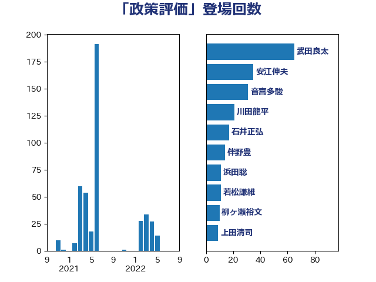

単語「政策評価」

| 武田良太 | 自由民主党 | 65 回 |
| 安江伸夫 | 公明党 | 35 回 |
| 音喜多駿 | 日本維新の会 | 31 回 |
| 川田龍平 | 立憲民主党 | 21 回 |
| 石井正弘 | 自由民主党 | 17 回 |
| 伴野豊 | 立憲民主党 | 14 回 |
| 浜田聡 | NHK党 | 11 回 |
| 若松謙維 | 公明党 | 11 回 |
| 柳ヶ瀬裕文 | 日本維新の会 | 10 回 |
| 上田清司 | 国民民主党 | 9 回 |
| 谷川とむ | 自由民主党 | 7 回 |
| 金子恭之 | 自由民主党 | 6 回 |
| 中川正春 | 立憲民主党 | 5 回 |
| 吉川沙織 | 立憲民主党 | 5 回 |
| 河野太郎 | 自由民主党 | 5 回 |
| 進藤金日子 | 自由民主党 | 5 回 |
| 鈴木俊一 | 自由民主党 | 5 回 |
| 島村大 | 自由民主党 | 4 回 |
| 平山佐知子 | 無所属 | 4 回 |
| 柴田巧 | 日本維新の会 | 4 回 |
| 田島麻衣子 | 立憲民主党 | 4 回 |
| 石田昌宏 | 自由民主党 | 4 回 |
| 野田国義 | 立憲民主党 | 4 回 |
| 小沢雅仁 | 立憲民主党 | 3 回 |
| 小泉進次郎 | 自由民主党 | 3 回 |
| 田村憲久 | 自由民主党 | 3 回 |
| 吉田忠智 | 立憲民主党 | 2 回 |
| 室井邦彦 | 日本維新の会 | 2 回 |
| 山口壯 | 自由民主党 | 2 回 |
| 岡本三成 | 公明党 | 2 回 |
| 浅野哲 | 国民民主党 | 2 回 |
| 牧山ひろえ | 立憲民主党 | 2 回 |
| 阿部知子 | 立憲民主党 | 2 回 |
| 馬淵澄夫 | 立憲民主党 | 2 回 |
| 三浦靖 | 自由民主党 | 1 回 |
| 中川康洋 | 公明党 | 1 回 |
| 吉良よし子 | 日本共産党 | 1 回 |
| 土田慎 | 自由民主党 | 1 回 |
| 小林史明 | 自由民主党 | 1 回 |
| 山東昭子 | 自由民主党 | 1 回 |
| 岸田文雄 | 自由民主党 | 1 回 |
| 平沢勝栄 | 自由民主党 | 1 回 |
| 梅村みずほ | 日本維新の会 | 1 回 |
| 梶山弘志 | 自由民主党 | 1 回 |
| 森まさこ | 自由民主党 | 1 回 |
| 田村まみ | 国民民主党 | 1 回 |
| 石井苗子 | 日本維新の会 | 1 回 |
| 舟山康江 | 国民民主党 | 1 回 |
| 萩生田光一 | 自由民主党 | 1 回 |
| 西田実仁 | 公明党 | 1 回 |
| 赤羽一嘉 | 公明党 | 1 回 |
| 遠藤良太 | 日本維新の会 | 1 回 |